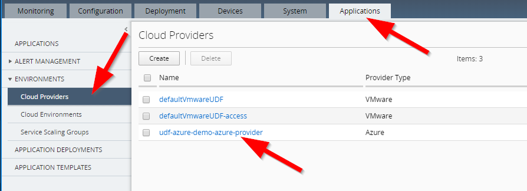
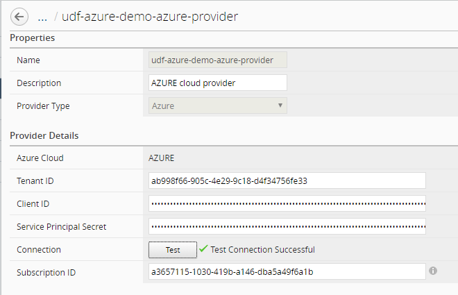
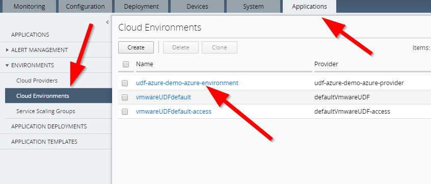

F5 BIG-IQ & Cloud Edition Lab > Class 2: BIG-IQ Deployment with auto-scale on AWS, Azure & VMware (Cloud Edition) > Module 5: Setup a Service scaling group (SSG) in Azure Source | Edit on
Lab 5.3: Review our SSG deployment in Azure¶
Azure configuration review¶
Connect to your Azure Console to review what has been created already.
Go to Resource groups

Here you can see that 2 Resource groups have been deployed:
- <YOUR PREFIX>This stack deploys a new VNET called vnet1demo.
We use this new VNET to avoid any conflict and ensure we won’t disrupt anything. We will create the subnets, gateway, VPN, an ubuntu instance that will behave as our app.
- <YOUR PREFIX>-azure-ssgthis will create the
Azure autoscaledeploymentlaunch configuration, auto scaling groups, …
- <YOUR PREFIX>-azure-ssgthis will create the
Those resource groups were deployed from our system called Ubuntu Lamp Server. If you want to review those, connect to this system and go to :
f5@03a920f8b4c0410d8f:~$ cd f5-azure-vpn-ssg
f5@03a920f8b4c0410d8f:~/f5-azure-vpn-ssg$ ls -l
-rwxrwxr-x 1 f5student f5student 6736 Dec 8 11:54 000-RUN_ALL.sh
-rwxrwxr-x 1 f5student f5student 1653 Dec 8 11:54 01-install_azure_cli.sh
-rwxrwxr-x 1 f5student f5student 5703 Dec 8 11:54 02-create-vpn-azure_cli.sh
-rwxrwxr-x 1 f5student f5student 4905 Dec 8 11:54 03-configure-bigip.sh
-rw-rw-r-- 1 f5student f5student 868 Dec 8 12:38 04-docker-on-ubuntu-azure.log
-rw-rw-r-- 1 f5student f5student 4757 Dec 8 11:54 04-docker-on-ubuntu-azure.yml
-rw-rw-r-- 1 f5student f5student 14896 Dec 8 12:01 08a-create-azure-auto-scaling.yml
-rwxrwxr-x 1 f5student f5student 6357 Dec 8 11:54 09a-create-azure-waf-app.py
-rwxrwxr-x 1 f5student f5student 6463 Dec 8 11:54 09b-create-azure-https-app.py
-rw-rw-r-- 1 f5student f5student 1045 Dec 8 11:54 10-delete-azure-app.yml
-rwxrwxr-x 1 f5student f5student 4669 Dec 8 11:54 111-DELETE_ALL.sh
-rwxrwxr-x 1 f5student f5student 1547 Dec 8 11:54 11-delete-azure-ssg-resources-check.py
-rw-rw-r-- 1 f5student f5student 1082 Dec 8 11:54 11-delete-azure-ssg-resources.yml
Take some time to review the different things setup in your own VNET.
BIG-IQ SSG configuration review - Azure¶
Connect to the BIG-IQ UI and go to Devices > Device Templates.
You should see a new device template called <your PREFIX>-Azure-device-template

Click on this new device template to review its configuration. You’ll see that only NTP and User Accounts have been setup.
Note
the admin password used here is <it’s in your config.yml file, BIGIP_PWD ATTRIBUTE>
Note
[New 6.0.1] DNS server shouldn’t be set in the device template
{kind=link}
Next, you may go to Applications > Environments > Cloud Providers. You will see a new Cloud Providers called <YOUR prefix>-Azure-provider:
{kind=link}
Click on this new cloud provider. You’ll see that it contains your Tenant ID, Client ID, Service Principal Secret
and your Subscription ID.
Click on the Test button when you need to make sure your credentials are fine.
{kind=link}
Go to Applications > Environments > Cloud Environments. Click on your cloud environment called <YOUR PREFIX>-Azure-environment
{kind=link}
You will be able to retrieve a lot of the information that were defined in the config.yml file:
Location
License type
BIG-IP image
BIG-IQ information
…
Note
It may take some time for the page to load.
{kind=link}
Go to Applications > Environments > Service Scaling Groups. Click on your SSG
called <YOUR PREFIX>-azure-ssg
{kind=link}
Go to Configuration > Devices. You’ll be able to see your two provisioned BIG-IPs`

Click on one of your BIG-IP to open its GUI in a new tab.
{kind=link}
Login: adminUser
Password: <it’s in your config.yml file, BIGIP_PWD ATTRIBUTE>
SSG BIG-IP configuration review - Azure¶
Once you’re logged in your BIG-IP, you can see a few things:
it’s offically managed by
BIG-IQit’s in SYNC. Our
BIG-IPspart of aSSGdeployed inAzurewill be setup as a cluster
{kind=link}
Note
Ignore the Provisioning Warning which is due to the license used.
Go to Device Management > Overview

You can see that Auto Sync is enabled for a Device Group called autoscale-group.
Let’s deploy an application to see how it is setup on our different components (Azure ALB,
BIG-IPs in the SSG).